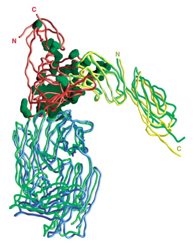

Volume 8, Issue 12, December 2000, Pages 1329–1339

Structures of HIV-1 gp120 Envelope Glycoproteins from Laboratory-Adapted and Primary Isolates
- Peter D. Kwong1,
 ,
,  ,
, - Richard Wyatt3,
- Shahzad Majeed1,
- James Robinson5,
- Raymond W. Sweet6,
- Joseph Sodroski3, 4,
- Wayne A. Hendrickson1, 2
- 1 Department of Biochemistry and Molecular Biophysics Columbia University New York, NY 10032 USA
- 2 Howard Hughes Medical Institute Columbia University New York, NY 10032 USA
- 3 Department of Cancer Immunology and AIDS Dana-Farber Cancer Institute and Department of Pathology Harvard Medical School Boston, MA 02115 USA
- 4 Department of Immunology and Infectious Diseases Harvard School of Public Health Boston, MA 02115 USA
- 5 Department of Pediatrics Tulane University Medical Center New Orleans, LA 70112 USA
- 6 Department of Immunology SmithKline Beecham Pharmaceuticals King of Prussia, PA 19406 USA
- Received 24 October 2000
- Revised 6 November 2000
- Accepted 7 November 2000
- Available online 9 February 2001
- Referred to by
- Structures of HIV-1 gp120 Envelope Glycoproteins from Laboratory-Adapted and Primary Isolates
- Structure, Volume 9, Issue 2, February 2001, Page I
Abstract
Background: The gp120 exterior envelope glycoprotein of HIV-1 binds sequentially to CD4 and chemokine receptors on cells to initiate virus entry. During natural infection, gp120 is a primary target of the humoral immune response, and it has evolved to resist antibody-mediated neutralization. We previously reported the structure at 2.5 Å of a gp120 core from the HXBc2 laboratory-adapted isolate in complex with a 2 domain fragment of CD4 and the antigen binding fragment of a human antibody. This revealed atomic details of gp120-receptor interactions and suggested multiple mechanisms of immune evasion.
Results: We have now extended the HXBc2 structure in P2221 crystals to 2.2 Å. The enhanced resolution enabled a more accurate modeling of less-well-ordered regions and provided conclusive identification of the density in the central cavity at the crux of the gp120-CD4 interaction as isopropanol from the crystallization medium. We have also determined the structure of a gp120 core from the primary clinical HIV-1 isolate, YU2, in the same ternary complex but in a C2 crystal lattice. Comparisons of HXBc2 and YU2 showed that while CD4 binding was rigid, portions of the gp120 core were conformationally flexible; overall differences were minor, with sequence changes concentrated on a surface expected to be exposed on the envelope oligomer.
Conclusions: Despite dramatic antigenic differences between primary and laboratory-adapted HIV-1, the gp120 cores from these isolates are remarkably similar. Taken together with chimeric substitution and sequence analysis, this indicates that neutralization resistance is specified by quaternary interactions involving the major variable loops and thus affords a mechanism for viral adaptation. Conservation of the central cavity suggests the possibility of therapeutic inhibitors. The structures reported here extend in detail and generality our understanding of the biology of the gp120 envelope glycoprotein.
Keywords
- 17b;
- antibody;
- CD4, complex;
- X-ray
Introduction
Human immunodeficiency virus (HIV-1) causes the depletion of CD4+ T-lymphocytes and, eventually, acquired immunodeficiency syndrome (AIDS) in chronically infected humans 1 and 2. HIV-1 entry into target cells is mediated by the viral envelope glycoproteins, gp120 and gp41, which are organized into trimeric complexes on the virion surface 3, 4 and 5. The gp120 exterior envelope glycoprotein binds the CD4 glycoprotein on target cells, which triggers conformational changes in gp120 that allow binding to one of two chemokine receptors, CCR5 or CXCR4 6, 7, 8, 9, 10, 11 and 12. Receptor binding is thought to lead to the exposure of the ectodomain of the gp41 transmembrane envelope glycoprotein and additional conformational changes that result in the fusion of the viral and cell membranes 13 and 14. The exposed location of the gp120 glycoprotein on the virus, which is required for receptor binding, renders the protein potentially vulnerable to neutralizing antibodies. A high level of glycosylation, the presence of surface-exposed variable loops (V1–V5 and  E), and conformational flexibility may reflect evolved viral defenses against the host humoral immune response 15, 16, 17 and 18.
E), and conformational flexibility may reflect evolved viral defenses against the host humoral immune response 15, 16, 17 and 18.
Elements of gp120 that are relatively well conserved among HIV-1 isolates fold into a “core,” which has been crystallized in a complex with the two amino-terminal domains (D1D2) of CD4 and the antigen binding fragment (Fab) of the human neutralizing antibody, 17b [15]. The gp120 core is composed of inner and outer domains, which reflects the likely orientation of gp120 in the assembled trimer, and a bridging sheet. Components of both domains and the bridging sheet contribute to CD4 binding. CD4 binds in a recessed pocket on gp120 to a surface that is larger than that occluded by a typical antibody-protein interaction. The interface displays several unusual features, including a shallow, water-filled cavity that is thought to function in immune evasion (a similar topological mismatch is seen in the complex between the adenovirus virus and its cellular receptor, CAR [19]). A second interfacial cavity penetrates into the hydrophobic interior of gp120; it is bounded by conserved interior gp120 residues derived from all three domains and by Phe-43 of CD4. Mutagenesis, conservation, and structural analysis all indicate that this “Phe-43 cavity” and its surrounding structures are critically important for CD4 binding. The Phe-43 cavity thus constitutes a conserved, spatially localized feature in a large, otherwise relatively variable gp120-CD4 interface.
The chemokine receptor binding surface of gp120 is thought to be composed of variable and conserved elements and to be oriented toward the target cell membrane by CD4 binding [15]. The third variable (V3) loop sequence determines the choice of chemokine receptor 9, 20, 21 and 22. In addition, a highly conserved gp120 structure near the bridging sheet has been shown to undergo conformational changes upon CD4 binding, to contain residues important for CCR5 binding, and to serve as a target for neutralizing antibodies that block chemokine receptor binding [23]. Presumably, this conserved basic surface of gp120 cooperates with the V3 loop to create a binding site for the relatively acidic CCR5 ectodomains [24].
The persistence of HIV-1 infections necessitates that conserved gp120 structures involved in receptor binding are poorly immunogenic and/or exhibit limited accessibility to potentially neutralizing antibodies. HIV-1 viruses that have been passaged in immortalized cell lines are typically more sensitive to antibody neutralization than are primary clinical isolates 25 and 26. The most important determinants of this resistance to neutralization are the major gp120 variable loops, V1/V2 and/or V3 27, 28, 29 and 30. In several cases, N-linked carbohydrate on or near these variable loops influences the sensitivity of primary HIV-1 isolates to neutralization by antibodies 31 and 32. The basis for the decreased sensitivity of primary isolates to neutralization appears to be a decreased exposure of the relevant epitopes in the context of the assembled, trimeric HIV-1 envelope glycoprotein complex 30, 33 and 34.
Whether free or complexed with receptors or neutralizing antibodies, additional structures of the HIV-1 envelope glycoproteins derived from primary, clinical HIV-1 isolates will provide insights useful in the quest for HIV-1 therapeutics and vaccines. Here we report the refined structure at 2.2 Å of a gp120 core derived from a laboratory-adapted, HIV-1 clade B isolate, HXBc2, in a complex with D1D2 of CD4 and the Fab fragment of the 17b antibody. We also report the structure at 2.9 Å of a gp120 core derived from a primary HIV-1 clade B isolate in the same ternary complex. This primary clinical isolate, YU2, had not been propagated in tissue culture prior to molecular cloning [35]. Thus, several aspects of the gp120 core structure, receptor binding, and interactions with neutralizing antibodies can be compared for laboratory-adapted and primary HIV-1.
Results
Structure Solution and Refinement
The HXBc2 ternary complex crystallized in the relatively rare space group P222136 and 37. Crystals generally diffracted to a Bragg limit of 3.5–2.5 Å, and we previously published the structure of this complex at 2.5 Å resolution. Despite extensive refinement, many details, including the identity of a large central density that dominated the Phe-43 cavity, remained ill defined at this resolution. In addition, several of the biologically important loops displayed high atomic-mobility (B) factors and were not accurately modeled.
By optimizing cryocooling techniques [38], using a higher-ionic-strength stabilizing solution, and screening several dozen crystals, we were able to collect data to 2.2 Å resolution, a 150% increase in constraints over the previous 2.5 Å data. The diffraction was highly anisotropic, with an atomic-mobility factor along the a axis of 16 Å2 with respect to the c axis. Nonetheless, the electron density maps calculated from these data were of much better quality, which enabled us to decipher more cryptic portions of the structure. The relatively high final R value of 26.8% (20–2.2 Å, all data > 0, Rfree = 32.9%) reflected the anisotropy and relatively poor data quality. In contrast, the geometric parameters were well satisfied and typified a high-quality 2.2 Å structure. The final model was composed of 8322 atoms and comprised residues 93–397 and 410–492 of the HXBc2 core, residues 1–181 of CD4, residues 1–214 of the 17b antibody light chain, residues 1–229 of the 17b antibody heavy chain, 14 N-acetylglucosamine residues, 2 fucose residues, 953 water molecules, and an isopropanol molecule. The higher resolution data permitted more precise solvent modeling, which in turn created a low-resolution model (at 4.5–5.0 Å, the R value was 17% with an Rfree of 25%) that was more accurate overall. This enabled mobile portions of the complex to be modeled accurately. While the overall refined model was similar to the previously published structure, some of the more mobile portions differed significantly; the root-mean-square (rms) difference in backbone was 0.6 Å for atoms with B values less than 50 Å2 and 2.5 Å for atoms with B values greater than 50 Å2.
The YU2 ternary complex displayed unusual polymorphism. Six different crystal forms grew in the initial “crystal screen” (Hampton Research), which increased to ten different morphologies after optimization. In conditions similar to those that ultimately yielded the 2.9 Å resolution C2 crystals, at least five other kinds of crystals grew, as follows: large single C2 plates that only diffracted to 6 Å; highly twinned needles that diffracted to 2.5 Å along the needle axis, but only to 6 Å otherwise; two needles in different P1 lattices that diffracted to 4 Å and 7 Å; and a blocky, rectangular crystal that showed no diffraction at all. The combination of polymorphism, non-single crystals, and generally weak diffraction frustrated the YU2 structure determination. Optimization was only possible by seeding to retain a particular crystal lattice.
The YU2 ternary complex was solved by molecular replacement with the refined HXBc2 structure. It has been refined to a final R value of 20.7% (20–2.9 Å data, data > 0, Rfree = 29.6%). Data were also anisotropic, though this was less evident because the overall diffraction stopped at 2.9 Å. The final model, composed of 7719 atoms, comprises residues 86–492 of the YU2 gp120 core, residues 1–181 of CD4, residues 1–214 of the light chain of the 17b antibody, residues 1–229 of the heavy chain of the 17b antibody, 14 N-acetylglucosamine residues, and 350 water molecules. A superposition of the HXBc2 and YU2 ternary complex structures is shown in Figure 1.
- 

Figure 1. Overall Structure of HXBc2 and YU2 Ternary ComplexesThe HXBc2 ternary complex is shown in Cα worm representation for the gp120 core (red), the two N-terminal domains of CD4 (yellow), and the Fab portion of the 17b neutralizing antibody (blue). The YU2 gp120 core has been superimposed on the HXBc2 core, and a Cα worm (green) is shown for the CD4 and 17b portions of the YU2 complex. For the YU2 core, the molecular surface of all amino acids that differ between the two isolates has been colored green. The gp120 cores are oriented around a vertical trimer axis, as defined by optimization of quantifiable surface parameters [39]. Thus, the virus membrane is positioned at the top of the picture, and the target cell membrane is at the bottom. Mutually perpendicular views of gp120 are shown in Figure 2 and Figure 4. The figure was made with GRASP [72]
Refined Structure of HXBc2 gp120
A ribbon diagram of the 2.2 Å refined HXBc2 core gp120 is shown in the left panel of Figure 2a. The structure closely resembles the previously published structure [15]. All of the secondary structure is retained (Figure 3). The only addition is a β strand at the N terminus. This strand, which we term β0, is weakly ordered, as evidenced by high B factors. It hydrogen bonds in an antiparallel manner with β7 and completes a four-on-two, antiparallel, 2 sheet subdomain.

Figure 2. Structure of HXBc2 and YU2 gp120In (a) and (b), the orientation of gp120 is related to Figure 1 by a 90° rotation about a vertical axis, and to the right-most molecule in Figure 4 by a 90° rotation about a horizontal axis. In the orientation shown, the viral membrane is positioned above the molecule; the target cell membrane is below.(a) Ribbon diagram. In the left panel, the HXBc2 core is depicted in red (α helices) and salmon (β strands) except for β15 in yellow, which hydrogen bonds to the C” strand of CD4. The inner domain (N terminus-α1, β4-β8, and α5-C terminus), bridging sheet (β2, β3, β20, and β21), and outer domain (β9-β19 and β22-β24) are labeled. In the right panel, the YU2 core is depicted in green (α helices) and light green (β strands) except for β15. The N terminus (N) and C terminus (C) are labeled, as are the sequence-variable loops.(b) Stereoplot of the Cα superposition of HXBc2 (red) and YU2 (black) core gp120. Every 10th Cα is marked with a filled circle, and every 20th residue of YU2 is labeled. Disulfide connections are depicted in ball-and-stick representations. Only ordered residues are drawn.The figure was drawn with MOLSCRIPT [73]
Figure 3. Sequence of HXBc2 and YU2 gp120The HXBc2 and YU2 core sequences are shown along with labeled secondary-structural assignments, as follows: cylinders for helices, arrows for strands, and “X” for disorder. The lowercase “gars” and “gag” sequences are artifacts of the expression system and loop truncation, respectively. The atomic mobility (B) factors are shown for HXBc2 and YU2. The numbers shown represent the B factors divided by ten and rounded to the nearest integer. B factors of less than 15 and greater than 85 Å2 were assigned values of 1 and 9, respectively. The root-mean-square deviations (rmsd) for YU2 and HXBc2 after Cα superposition are shown rounded to the nearest Å. Sequence identities and rmsd of less than 0.5 Å are depicted with a period; sequence gaps and rmsd for nonconserved residues are depicted with a dash. Asterisks denote changes in N-linked glycosylation. Although truncated in the core, the V3 loop sequence is also shown for residues 296–331. Residues have been numbered according to the HXBc2 gene sequence, with the mature full-length protein beginning at residue 31
Other than the N terminus (83–89), five other residues have been added to the structure. These include a single addition to the mostly disordered V4 loop (at 397) and four additional N-acetylglucosamine glycans at asparagines 88, 230, 241, and 463. Of the 18 potential sites of glycosylation in the HXBc2 core, 14 show sugar additions (although some of these may only be partially occupied), 3 are apparently not used (at 332, 356, and 397), and 1 falls in the disordered V4 loop. A large number of residues (51 out of 297) have shifted in the refinement by more than 1.0 Å. Shifts occur at the N terminus and loops (loops A and E, as well as the V1/V2 stem and V4 and V5 variable loops). Thus, the ordered core is essentially unchanged in the refinement, but some of the more mobile portions have now been modeled more accurately.
Refined Structure of YU2 gp120
A ribbon diagram of the 2.9 Å YU2 core gp120 is shown in the right panel of Figure 2a. The sequence of YU2 differs from HXBc2 in 41 positions of the core (Figure 3). As may be expected from this 86% identity, Cα superposition shows that the two structures are virtually identical (Figure 2b). Changes in the secondary structure of more than a single amino acid are found only in the following four places: the N terminus, where the tenuously ordered β0 strand in the HXBc2 structure appears to be displaced by a lattice contact with the N terminus of the 17b heavy chain; the V1/V2 stem, where the antiparallel hydrogen bonding is extended by three amino acids; the α4 helix, where the carbonyl of 388 makes a hydrogen bond to the hydroxyl of Thr-392 (asparagine in HXBc2) instead of to the 392 backbone nitrogen; and the highly divergent V4 loop, which was disordered in the HXBc2 structure but is fully ordered in YU2, along with its two sites of N-linked glycosylation.
In addition to the correlation in secondary structure, a strong correlation between B factors is also seen (Figure 3), although the atomic mobilities of YU2 are generally quite a bit higher than in HXBc2, which is a consequence of the less ordered overall diffraction. Cα-rms deviations between YU2 and HXBc2 correlate with B factors, and this suggests that differences between the two structures are in part related to their internal mobility.
Sequence differences between YU2 and HXBc2 are primarily in the outer domain. Of the 41 changes, 1 is in the bridging sheet (97% identity), 5 are in the inner domain (95% identity), and 35 are in the outer domain (79% identity). Perhaps surprisingly, overall domain structural deviations between HXBc2 and YU2 do not correlate with amino acid conservation. Superimposing the respective HXBc2 and YU2 domains shows that the outer domain has an rmsd of roughly half those observed for the inner domain and the bridging sheet (Table 1). The deviations seen with the outer domain are of the same order as the deviations observed for the N-terminal domain of CD4 and the 17b variable domains. These results suggest that the deviations observed between HXBc2 and YU2 cores are not a result of sequence-related structural divergence but are rather a function of the intrinsic conformational mobility of the domains coupled with the different lattice environments of the two crystals.
Table 1. Domain Flexibility in HXBc2 and YU2 Ternary Complexes
Region Being Superimposed (HXBc2 onto YU2) Cα Rms Deviations after Superposition Core gp120 gp120 Inner Domain gp120 Outer Domain gp120 Bridging Sheet CD4 N-Terminal Domain 17b Variable Domains Core gp120 1.02 0.63 1.54 1.01 2.26 Inner domain 1.29 0.91 1.20 2.24 1.42 2.53 Outer domain 1.00 1.17 1.63 1.10 1.71 Bridging sheet 2.15 1.94 2.47 2.81 2.90 CD4: N-terminal domain 1.62 1.69 1.48 1.94 3.55 17b: variable domains 2.12 2.80 1.58 1.58 3.74 Individual domains (specified by the left-most column) of the HXBc2 ternary complex structure were superimposed on the corresponding domains in the YU2 structure. After each superposition, the root-mean-square deviation (rmsd) in Cα position was calculated for individual domains (specified in the top row). The bold, underlined numbers along the table diagonal represent the rmsd of the optimal superposition of each domain. They represent an estimate of the internal conformational flexibility of each domain. The off-diagonal results are an indication of the relative domain movement convoluted with the internal domain flexibility. For gp120, all residues conserved and ordered between HXBc2 and YU2 were superimposed. For the gp120 core, the following 266 Cα positions were analyzed: residues 83–118, 204–256, and 474–492 of the inner domain (101 positions); residues 257–421 and 436–473 of the outer domain (131 positions); and residues 119–203 and 422–435 of the bridging sheet (34 positions). For CD4 and 17b, only the domains closest to gp120 were used; for CD4, residues 1–98 were used; and for 17b, residues 1–109 of the light chain and 1–127 of the heavy chain were used. - Full-size table
For the bridging sheet, the flexibility in the V1/V2 stem in conjunction with a lattice contact with the second domain of CD4 results in a different orientation of the V1/V2 stem and a high overall rmsd. For the inner domain, the overall B factor is high; of the 101 amino acids in common between the HXBc2 and YU2 inner domains, only 26 have a Cα B factor of less than 50 Å2. If superpositions are made with this ordered subfraction, the Cα rmsd drops to 0.28 Å. In contrast, 70% of the outer domain amino acids have Cα B factors of less than 50 Å2.
References
- 1
Isolation of a T-lymphotropic retrovirus from a patient at risk for acquired immunodeficiency syndrome (AIDS)
Science, 220 (1983), pp. 868–871

- 2
Frequent detection and isolation of cytopathic retroviruses (HTLV-III) from patients with AIDS and at risk for AIDS
Science, 224 (1984), pp. 500–503
- 3
Characterization of gp41 as the transmembrane protein coded by the HTLV-III/LAV envelope gene
Science, 229 (1985), pp. 1402–1405
- 4
Characterization of envelope and core structural gene products of HTLV-III with sera from AIDS patients
Science, 228 (1985), pp. 593–595
- 5
Major glycoprotein antigens that induce antibodies in AIDS patients are encoded by HTLV-III
Science, 228 (1985), pp. 1091–1094
- 6
The CD4 (T4) antigen is an essential component of the receptor for the AIDS retrovirus
Nature, 312 (1984), pp. 763–767
- 7
HIV-1 entry co-factorfunctional cDNA cloning of a seven-transmembrane, G protein-coupled receptor
Science, 272 (1996), pp. 872–877
- 8
Identification of a major co-receptor for primary isolates of HIV-1
Nature, 381 (1996), pp. 661–666
- 9
The beta-chemokine receptors CCR3 and CCR5 facilitate infection by primary HIV-1 isolates
Cell, 85 (1996), pp. 1135–1148
- 10
HIV-1 entry into CD4+ cells is mediatd by the chemokine receptor CC–CKR-5
Nature, 381 (1996), pp. 667–673
- 11
Cc CKR5a Rantes, MIP-1alpha, MIP-1beta receptor as a fusion cofactor for macrophage-tropic HIV-1
Science, 272 (1996), pp. 1955–1958
- 12
A dual-tropic primary HIV-1 isolate that uses fusin and the beta-chemokine receptors CKR-5, CKR-3, and CKR-2b as fusion cofactors
Cell, 85 (1996), pp. 1149–1158
- 13
Core structure of gp41 from the HIV envelope glycoprotein
Cell, 89 (1997), pp. 263–273
- 14
Atomic structure of the ectodomain from HIV-1 gp41
Nature, 387 (1997), pp. 426–430
- 15
Structure of an HIV gp120 envelope glycoprotein in complex with the CD4 receptor and a neutralizing human antibody
Nature, 393 (1998), pp. 648–659
- 16
Energetics of the HIV gp120–CD4 binding reaction
Proc. Natl. Acad. Sci. USA, 97 (2000), pp. 9026–9031
- 17
The antigenic structure of the human immunodeficiency virus gp120 envelope glycoprotein
Nature, 393 (1998), pp. 705–711
- 18
The HIV-1 envelope glycoproteinsfusogens, antigens and immunogens
Science, 280 (1998), pp. 1884–1888
- 19
Structural analysis of the mechanism of adenovirus binding to its human cellular receptor, CAR
Science, 286 (1999), pp. 1579–1583
- 20
The V3 domain of the HIV-1 gp120 envelope glycoprotein is critical for chemokine-mediated blockade of infection
Nat. Med., 2 (1996), pp. 1244–1247
")
{kind=link}
{kind=link}
{kind=link}
{kind=link}
{kind=link}
{kind=link}
{kind=link}
{kind=link}